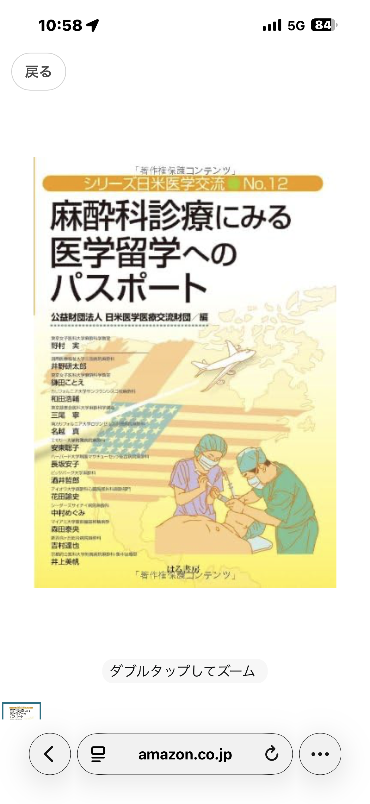
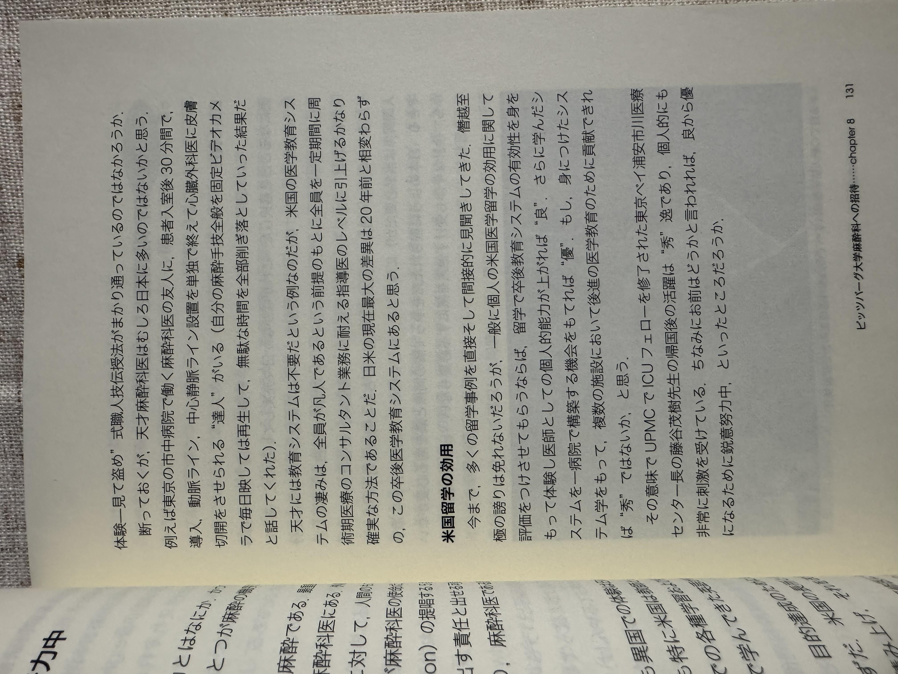

キャリア・研究ビジョン・産学連携のご共有
2026年5月15日
「好奇心」
「大隠朝市」
「どこかの分野で未解決の課題は
他の分野では90%解決されている」
蝋人形になること — 後世に残る研究業績を確立し、不朽の存在として認知される


「例えば東京の市中病院で働く天才麻酔科医はおるのだが…」
— 酒井哲郎先生
『麻酔科診療にみる医学留学へのパスポート』
公益財団法人 日米医学医療交流財団 編
天野篤先生（上皇の心臓バイパス手術執刀医）からお見合いを紹介されるほどの信頼関係
全身麻酔が効く仕組みには十分な科学的根拠がまだない。
医学部を持たない京都工業繊維大学の研究が最も核心に迫っている —
分野横断的アプローチの重要性を示す好例
データサイエンス（滋賀大学）× 臨床医学（滋賀医科大学）
両大学の間でドメイン知識による橋渡しができる稀有なポジション
研究において倫理は再現性のパーツであるに過ぎないのに過大視されている。
オープンデータを活用して研究を加速させるほうが生産的
国際連携は相手側の事務能力に大きく依存する。国内でのネットワーク構築は成果として残る。
倫理審査の未了は共同研究における予測困難なリスク。
医学はデータの下流ではあるが、少なくとも本人のプラクティスは変わるので必ず社会実装される
エビデンスの階梯は誤解されている。
ケースリポートはRCTに劣らない
データの上流に遡ってキャリアを積み、手法をつくる側へ。
同時に臨床経験に基づく社会実装力を武器に、研究と実践の両輪を回す。
生成AI時代においてはコード能力の客観的評価が困難に
生成AI登場以前のプログラミングコンペティションにおける受賞歴あり
→ コーディング能力、およびコードレビュー能力の客観的裏付け
伊藤忠が日本におけるDevin代理店となった今、滋賀大学でのDevin導入を検討できないか？
大学発ベンチャーが獲得した法人補助金を大学の研究基盤に還流させるサステナブルなモデルを構築
導入実績のあるシフト最適化・学術支援を基盤に学内外へ展開。論文ダッシュボードでセンター業務を効率化。
特定の研究者（佐藤俊哉氏）との共同研究は行わない方針
ご清聴ありがとうございました